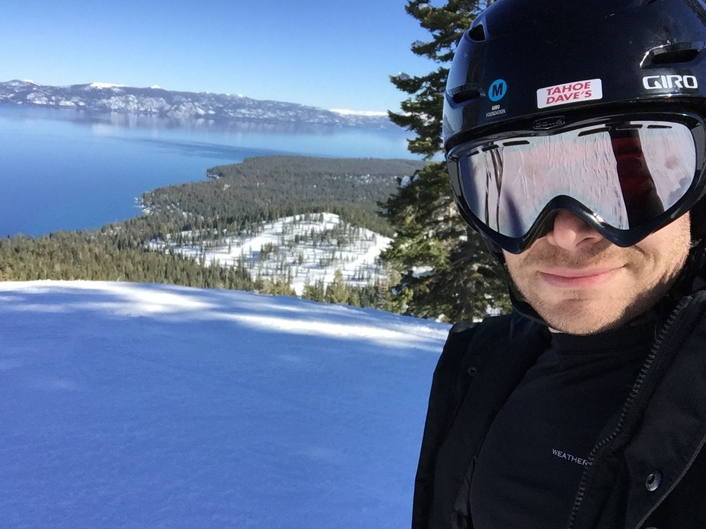
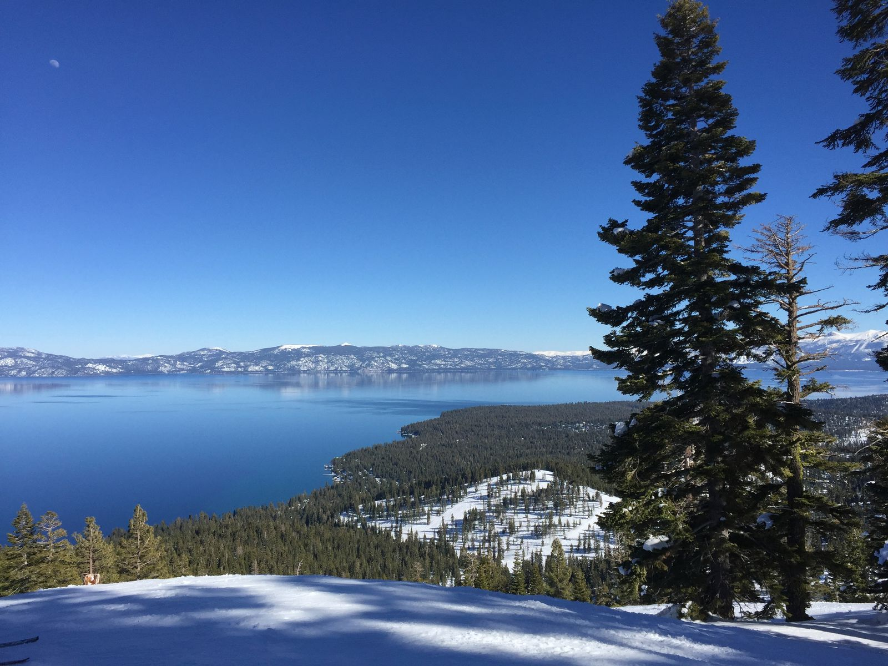
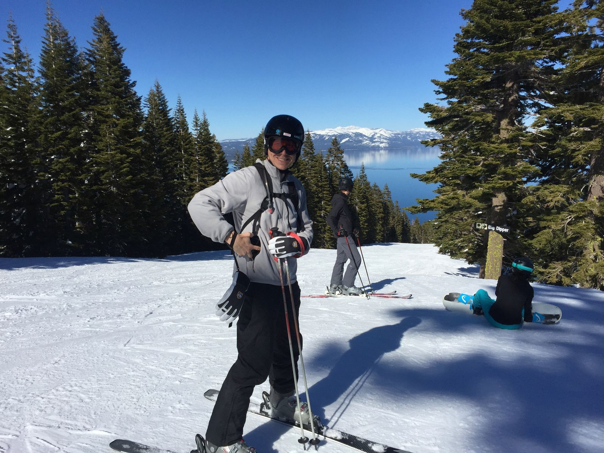
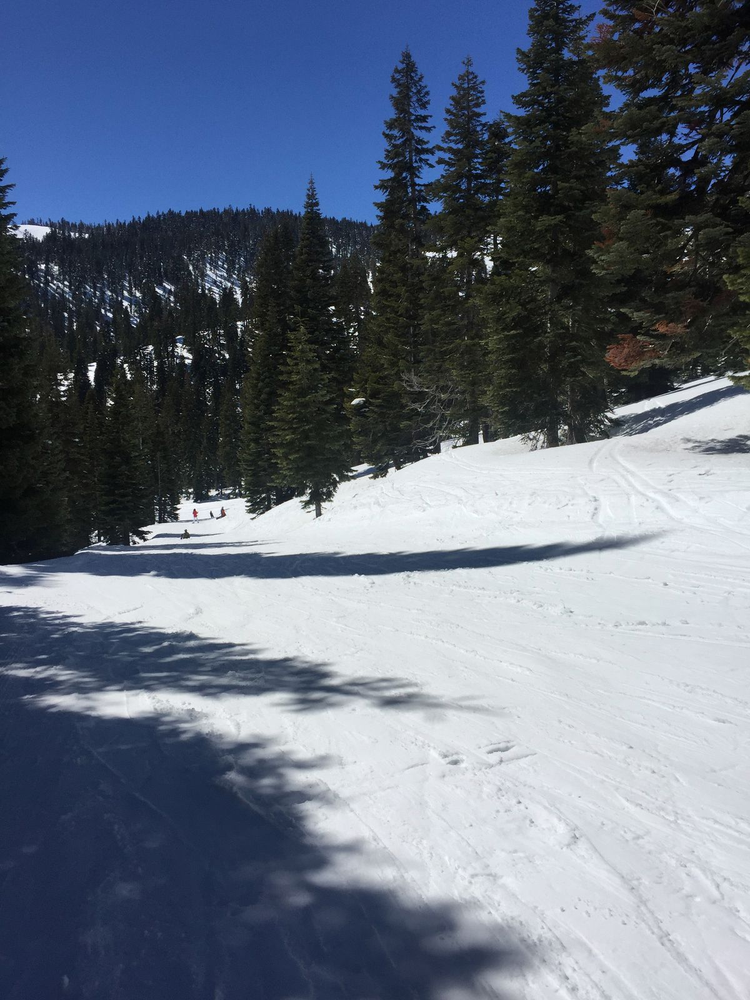

Tahoe Skiing
Skiing Tahoe is different from any other skiing I have done before. Or perhaps I just haven't skied in so long that I forgot how much fun it is. With 6-8 feet of snow accumulated on the ground, there are no green patches and no ice. The temperature was also around 55ºF, so there was really no need for a jacket.
Apart from falling off the chair lift before my first run of the day, I'd say I did pretty well. We started off with some scenic greens and ended on some narrow and windy blues.

The view of Lake Tahoe from the slopes 
The same view without me in it 
The birthday boy, desperately craving tacos 
Excellent snow for skiing